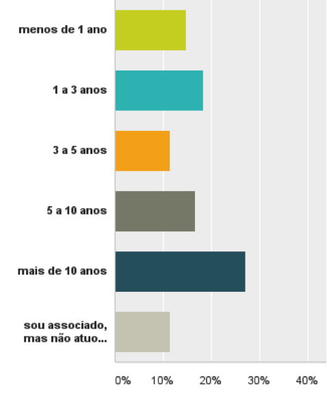
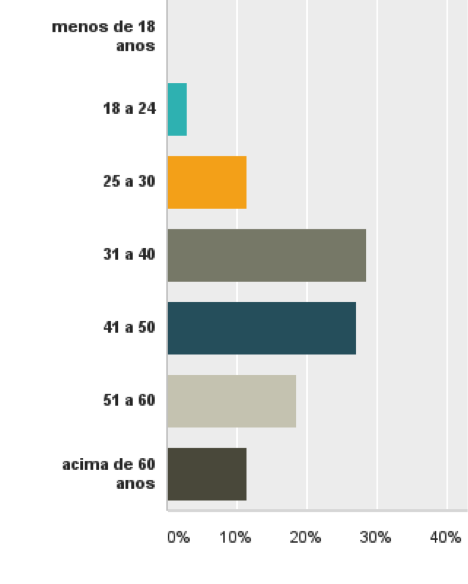
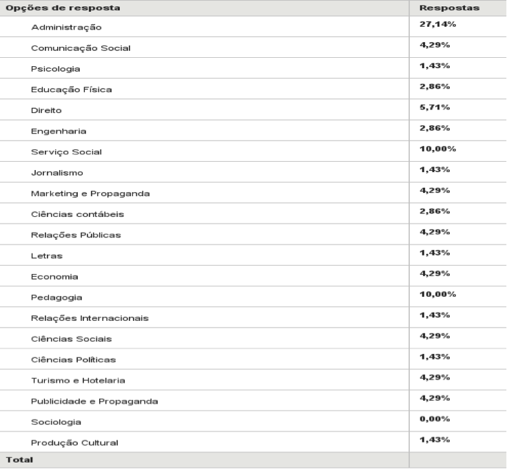

A maioria dos captadores é funcionário das ONGs
23 de Janeiro de 2017 às 07:00
Nesta sequencia de artigos sobre o perfil do captador de recursos, tenho analisado os resultados do Censo ABCR 2015. Já apresentei aqui as características pessoais dos captadores de recursos brasileiros - como a formação, idade e idiomas – e também uma reflexão sobre o dia-a-dia dos profissionais, que trabalham muitas horas por semana e contam com apoio da sua diretoria no desenvolvimento de suas funções. Agora, vamos falar da remuneração dos captadores.
Um tema sempre muito polêmico é como deve ser feita a remuneração desses profissionais. No mundo inteiro, assim como no Brasil, as boas práticas do setor[1] recomendam que os captadores tenham sua remuneração pré-definida antes de começar o seu trabalho, sempre que possível configurada como um salário. Remuneração por desempenho é uma alternativa bem-vinda quando servir para estimular o trabalhador e complementar a sua remuneração. Mas jamais, como em qualquer profissão, pode o captador ter sua remuneração vinculada única e exclusivamente com o resultado da captação. Em outras palavras: caso o trabalho não dê resultado, não bater as metas, ainda assim o captador deve receber pelo seu trabalho, empenho e conhecimento.
Felizmente, essa é a realidade do terceiro setor brasileiro: de todos os profissionais que fizeram parte do Censo ABCR 2015, 25% são voluntários e 65% recebem a partir de uma remuneração fixa pré-combinada. Destes, a grande maioria recebe inclusive só o valor já combinado, o salário. Confira na tabela abaixo:
Um tema sempre muito polêmico é como deve ser feita a remuneração desses profissionais. No mundo inteiro, assim como no Brasil, as boas práticas do setor[1] recomendam que os captadores tenham sua remuneração pré-definida antes de começar o seu trabalho, sempre que possível configurada como um salário. Remuneração por desempenho é uma alternativa bem-vinda quando servir para estimular o trabalhador e complementar a sua remuneração. Mas jamais, como em qualquer profissão, pode o captador ter sua remuneração vinculada única e exclusivamente com o resultado da captação. Em outras palavras: caso o trabalho não dê resultado, não bater as metas, ainda assim o captador deve receber pelo seu trabalho, empenho e conhecimento.
Felizmente, essa é a realidade do terceiro setor brasileiro: de todos os profissionais que fizeram parte do Censo ABCR 2015, 25% são voluntários e 65% recebem a partir de uma remuneração fixa pré-combinada. Destes, a grande maioria recebe inclusive só o valor já combinado, o salário. Confira na tabela abaixo:

Se a expressiva maioria dos captadores recebe uma remuneração fixa, é de se esperar também que sejam funcionários de organizações da sociedade civil, contratados dentro da legislação brasileira, a Consolidação das Leis Trabalhistas (CLT).
E o Censo ABCR 2015 mostra exatamente isso: 57% dos profissionais é “CLT”, ou seja, tem registro em carteira, salário fixo, e todos os seus benefícios garantidos, como férias e décimo terceiro. É um resultado expressivo, e que naturalmente deve ser sempre estimulado, uma vez que é fundamental que a captação de recursos seja feita “em casa”, “de dentro para fora” – uma organização que não tem a sua estratégia e estrutura de financiamento, dificilmente consegue alcançar sua sustentabilidade financeira.
Confira o resultado à pergunta sobre o vínculo profissional com a organização na qual o profissional atua:

Infelizmente, porém, apesar dos resultados do Censo ABCR serem positivos no que diz respeito à forma da remuneração do captador, e ao seu vínculo com a organização, eles não o são quando falamos da sua remuneração efetiva: ela é ainda muito baixa no país, e precisar ser estimulada. Metade dos profissionais do Censo informou receber entre 2 mil e 5 mil reais, e pouco mais de 15% recebe acima de 10 mil reais por mês, conforme pode ser conferido abaixo:

Uma remuneração justa e adequada é necessária para, não somente valorizar a profissão, mas também estimular que o terceiro setor atraia profissionais cada vez mais dedicados qualificados, aumentando a eficácia da captação e o impacto das organizações.
O vínculo, a forma de remuneração e o total da remuneração. Os três resultados que foram analisados neste artigo, como parte do processo de estudo do Censo ABCR 2015. No próximo – e último artigo desta série – vamos conhecer os meios que os captadores utilizam para se qualificar, e como eles avaliam o atual desenvolvimento da profissão no país. Até lá.
João Paulo Vergueiro, administrador, diretor executivo da ABCR – Associação Brasileira de Captadores de Recursos e professor de responsabilidade social corporativa da FECAP.
[1] Confira no Código de Ética e Conduta Profissional do Captador de Recursos - http://captadores.org.br/codigo-de-etica/
Publicado por
Notícias mais populares
Gestão
Em agosto de 2017, a revista ÉPOCA e o Instituto Doar divulgaram a primeira ediç&...
Contexto e tendências
Criado para tornar mais transparentes as parcerias entre a administração públic...
Profissional captador
A captação de recursos é fundamental para a sustentabilidade de uma organiza&cc...